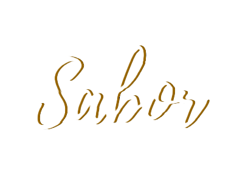
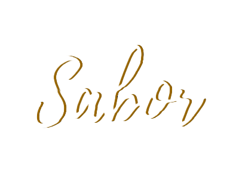
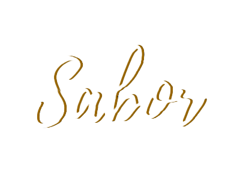

Gelieve onderstaande formulier in te vullen om een reservatie te maken.
Wij proberen u zo spoedig mogelijk te antwoorden.
RESERVEREN

Gelieve onderstaande formulier in te vullen om een reservatie te maken.
Wij proberen u zo spoedig mogelijk te antwoorden.
RESERVEREN
Sinds 1977 brengt ristorante Sabor u eenvoudige en lekkere gerechten met een vleugje Spaanse culinaire traditie. Kwaliteit staat hier voorop, evenals een respectvolle omgang met ingrediënten en producten.

Plato variado - € 7 p.p.
Gemengd aperitiefbord.
Queso manchego, chorizo serrano, salami van cecina de Leon, jamón serrano, Marcona amandelen, pan con tomate, diverse olijven, gemarineerde ansjovis, slaatje met pikante peper en kappertjes
Empanadillas rellenas de calamar en su propria tinta
Gevuld gebakje met inktvisvulling en inktsaus - 3 st. – € 6 p.p.
Coliflor asada con hummus, espuma de limon y za’atar
Geroosterde bloemkool met hummus, citroenschuim en za’atar - € 6 p.p.
Croquetas de champiñones y manchego con trufa
Kroketten van Parijse champignons en truffelmanchego - € 6,5 p.p.
Affogato con helado de cardamomo 5 Kardemomijs, ‘verdronken’ in espresso - € 5 p.p.
Sinds 1977 brengt ristorante Sabor u eenvoudige en lekkere gerechten met een vleugje Spaanse culinaire traditie. Kwaliteit staat hier voorop, evenals een respectvolle omgang met ingrediënten en producten.
LEES MEER| Maandag | Gesloten | |
|---|---|---|
| Dinsdag | Gesloten | |
| Woensdag | 17:00 - 22:00 | |
| Donderdag | 17:00 - 22:00 | |
| Vrijdag | 17:00 - 22:00 | |
| Zaterdag | 17:00 - 22:00 | |
| Zondag | 17:00 - 22:00 |

Absoluut geweldige tapas! We hebben het aanbevolen tapasmenu voor 2 personen besteld. De kwaliteit van het eten was geweldig en zo was de service.
Geweldige tapas met een redelijke deal. Smaak is zoals in Spanje. Zeer vriendelijk personeel.
Ik heb altijd een geweldige avond gehad bij Sabor. Goed eten, eerlijke prijs en een geweldige sfeer zorgen voor een geweldige eetervaring.